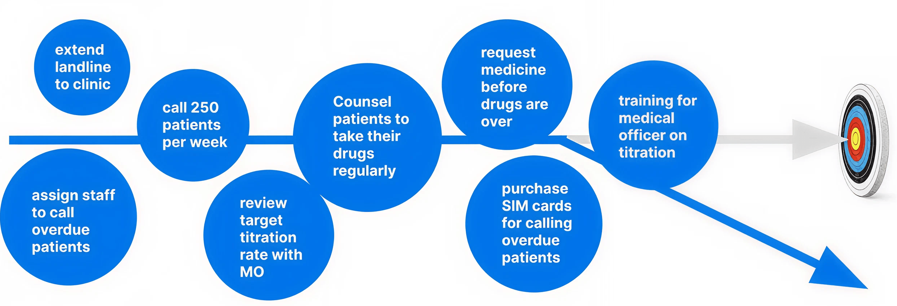
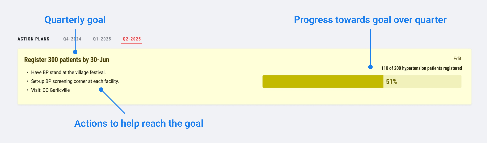
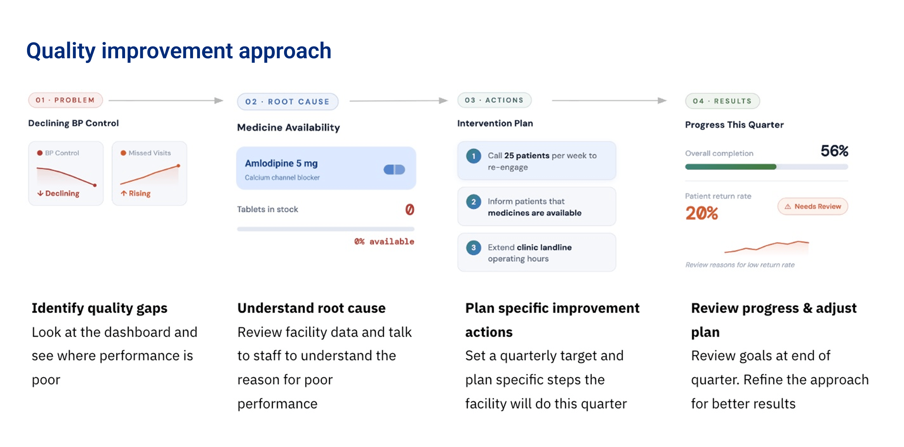
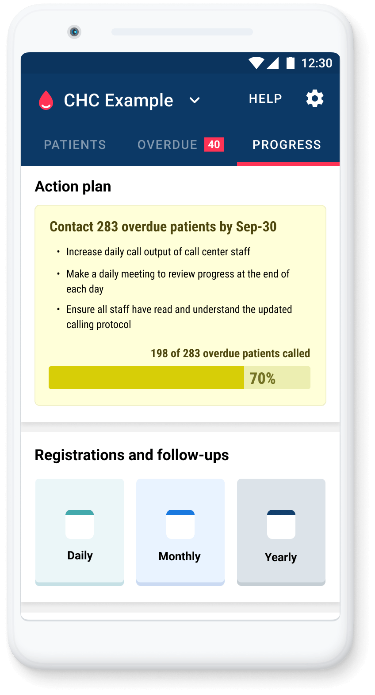

Simple dashboard helps program managers answer critical questions:
- Are more patients getting their blood pressure under control?
- Are patients returning for their follow ups?
- Which facilities require specific interventions?
But without a clear, measurable goal, program managers can spread their efforts across too many priorities and make little progress on the outcomes that matter most.

A new "Action Plans" feature on the Simple dashboard helps close this gap. It enables program managers to identify which indicators need improvement, set achievable improvement goals, outline specific actions, and track progress — all in one place.
This feature was inspired by the approach of Dr. Rai, a doctor in India who would review district-level tuberculosis reports, look for the real story in the data, and hand-write notes directly on them — highlighting key data points and actions for local health officials and their teams to focus on to improve patient outcomes.
How Action Plans work
At its core, an “Action Plan” is simply a quarterly goal, supported by clear actions, with progress tracked automatically. This transforms the Simple dashboard from a passive reporting tool into an active management system.
Each action is tied to a goal, and each goal is linked to a clearly defined, measurable indicator that requires improvement in that health facility. For example, a goal might be to reduce the number of patients with uncontrolled blood pressure by 10% over the next three months.

Each Action Plan can include one or more actions, forming a comprehensive improvement strategy with measurable goals.
Measurable. Actionable. Achievable.
Action Plans are built around three principles:
- Goals should be measurable
- Actions should be specific
- Targets should be achievable
Measurable — goals are tied to a clearly defined indicator on the dashboard so progress can be tracked automatically.
Actionable — actions should be specific tasks that healthcare staff can complete, not vague directions, but concrete steps that can be carried out on the ground.
Achievable — targets should be realistic enough to be reached within a quarter, keeping teams motivated and focused.
This provides the data and structure to guide program managers toward focused, realistic goals — rather than spreading efforts across too many priorities.
From data to goal to actions
The feature is grounded in a structured quality improvement approach.

Each quarter, program managers follow a clear cycle:
- Identify gaps using dashboard data
- Understand root causes through data and discussions with teams on the ground
- In collaboration, set measurable and achievable quarterly goals
- Plan specific actions to be carried out to achieve the goals
- Track progress throughout the quarter
This ensures program managers are identifying performance issues and their root causes and actively tracking and managing improvements.
Built for real-world program use
Action Plans are designed with the time constraints of program managers in mind:
- Program managers can create an action plan in under 15 minutes per facility
- It supports collaboration between program and facility managers
- It ensures that progress towards set goals can be tracked easily and transparently
- It is viewable by health workers in the Simple app to support execution on the ground

The big win
By making goals and progress visible to program managers, facility managers and health workers at the facility, health workers feel more connected to the targets.
This helps foster ownership, accountability, and a stronger drive to achieve the targets set.